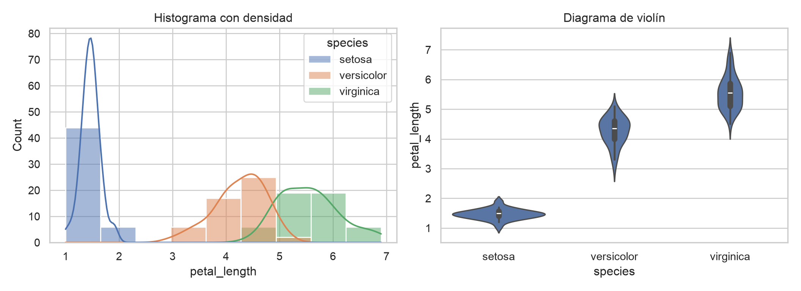
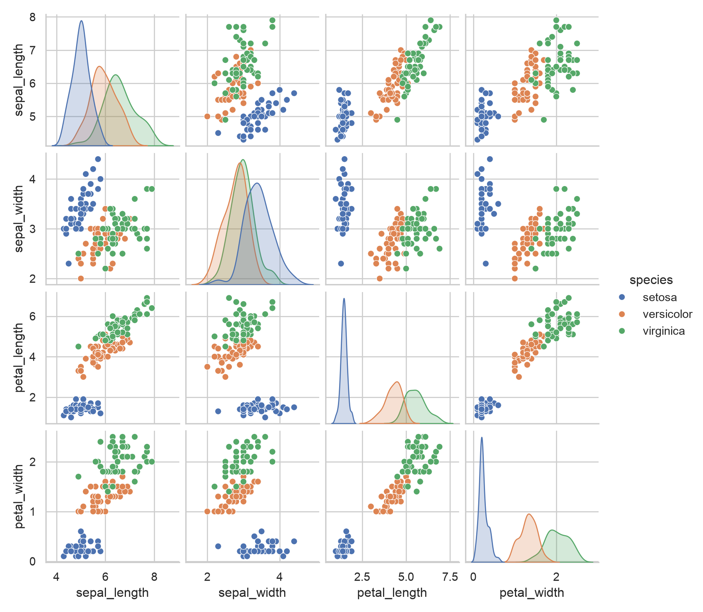
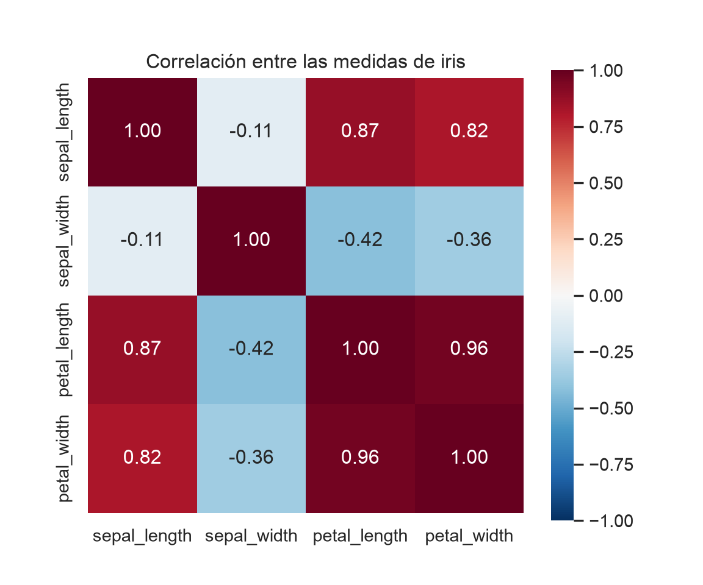
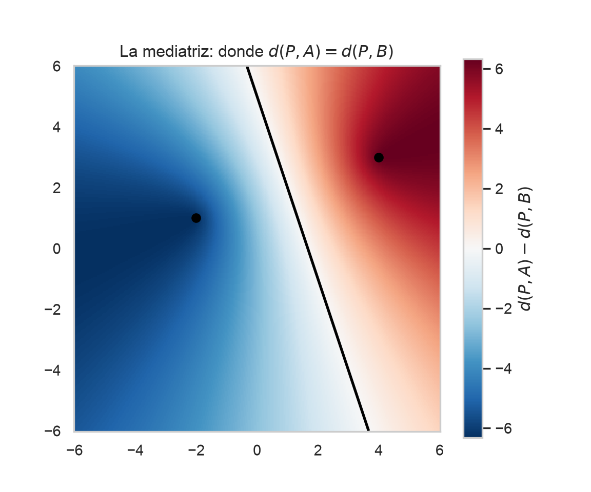

Código
import numpy as np
import matplotlib.pyplot as pltFecha: 19 de noviembre, 2026
En Visualización de datos con Matplotlib aprendimos a construir gráficas y a estudiar curvas y lugares geométricos, y en Varias gráficas en una figura y gráficas interactivas con Plotly a reunir varias gráficas en una figura. En esta segunda parte conoceremos Seaborn, una biblioteca para gráficas estadísticas, y profundizaremos en los mapas de calor en 2D.
Al terminar este capítulo podrás:
imshow(), pcolormesh() y sns.heatmap().import numpy as np
import matplotlib.pyplot as pltSeaborn es una biblioteca construida sobre Matplotlib para hacer gráficas estadísticas con muy poco código. Trabaja directamente con tablas de pandas (DataFrame) y elige automáticamente colores, leyendas y etiquetas.
| Matplotlib | Seaborn | |
|---|---|---|
| Nivel | Bajo: controlas cada detalle. | Alto: una función hace toda la gráfica. |
| Datos | Arreglos y listas. | Principalmente DataFrame. |
| Ideal para | Gráficas matemáticas y personalizadas. | Exploración estadística de datos. |
| ¿Se pueden combinar? | Sí: las gráficas de Seaborn son objetos de Matplotlib (ax). |
import seaborn as sns
import plotly.express as px
sns.set_theme(style="whitegrid") # Estilo general de las gráficas
iris = px.data.iris() # El conjunto iris que conocimos en la primera parte| Función de Seaborn | Gráfica |
|---|---|
sns.scatterplot() |
Dispersión, con color (hue) por grupo. |
sns.histplot() |
Histograma, opcionalmente con la curva de densidad (kde=True). |
sns.kdeplot() |
Curva de densidad (versión “suave” del histograma). |
sns.boxplot(), sns.violinplot() |
Caja y violín por grupo. |
sns.regplot() |
Dispersión con recta de regresión. |
sns.pairplot() |
Todas las gráficas de dispersión entre pares de variables. |
sns.heatmap() |
Mapa de calor de una matriz. |
fig, axs = plt.subplots(1, 2, figsize=(11, 4))
sns.histplot(data=iris, x="petal_length", hue="species", kde=True, ax=axs[0])
axs[0].set_title("Histograma con densidad")
sns.violinplot(data=iris, x="species", y="petal_length", ax=axs[1])
axs[1].set_title("Diagrama de violín")
fig.tight_layout()
plt.show()
Observa el argumento ax=: así una gráfica de Seaborn se coloca en uno de los subplots de Matplotlib.
pairplot()sns.pairplot(iris.drop(columns="species_id"), hue="species", height=2)
plt.show()
Una sola línea crea las \(4 \times 4\) combinaciones de variables. En la diagonal aparece la distribución de cada variable.
Un mapa de calor (heatmap) representa los valores de una matriz con colores. Hay tres formas principales de hacerlo:
| Función | Ideal para |
|---|---|
plt.imshow() |
Matrices grandes o imágenes; funciones \(f(x, y)\) en una malla. |
plt.pcolormesh() |
Mallas con coordenadas \(x\), \(y\) explícitas. |
sns.heatmap() |
Tablas pequeñas, con los valores escritos en cada celda (annot=True). |
La correlación mide qué tan relacionadas están dos variables, de \(-1\) a \(1\). Pandas calcula la matriz de correlación con .corr() y Seaborn la dibuja:
correlacion = iris.drop(columns=["species", "species_id"]).corr()
plt.figure(figsize=(6, 5))
sns.heatmap(correlacion, annot=True, fmt=".2f", cmap="RdBu_r", vmin=-1, vmax=1, square=True)
plt.title("Correlación entre las medidas de iris")
plt.show()
Usamos una paleta divergente (RdBu_r): azul para correlaciones negativas, rojo para positivas y blanco para cero.
| Tipo de paleta | Cuándo usarla | Ejemplos |
|---|---|---|
| Secuencial | Valores de menor a mayor. | viridis, Blues, magma |
| Divergente | Valores alrededor de un centro (como el 0). | RdBu_r, coolwarm |
| Cualitativa | Categorías sin orden. | tab10, Set2 |
Un mapa de calor también ayuda a ver un lugar geométrico. Pintemos, en cada punto del plano, la diferencia \(d(P, A) - d(P, B)\) para los puntos \(A = (-2, 1)\) y \(B = (4, 3)\) del ejemplo de la mediatriz. La mediatriz es exactamente donde esa diferencia vale cero:
X, Y = np.meshgrid(np.linspace(-6, 6, 300), np.linspace(-6, 6, 300))
diferencia = np.sqrt((X + 2)**2 + (Y - 1)**2) - np.sqrt((X - 4)**2 + (Y - 3)**2)
fig, ax = plt.subplots(figsize=(6, 5))
malla = ax.pcolormesh(X, Y, diferencia, cmap="RdBu_r", shading="auto")
fig.colorbar(malla, label="$d(P, A) - d(P, B)$")
ax.contour(X, Y, diferencia, levels=[0], colors="black", linewidths=2)
ax.scatter([-2, 4], [1, 3], color="black", zorder=3)
ax.set_aspect("equal")
ax.set_title("La mediatriz: donde $d(P, A) = d(P, B)$")
plt.show()
Los puntos rojos están más cerca de \(B\) y los azules más cerca de \(A\); la frontera blanca es la mediatriz.
Resuelve los ejercicios en los editores interactivos. Recuerda que lo que escribas no se guarda al recargar la página. La primera vez que ejecutes un editor, Seaborn tarda unos segundos en instalarse.
Dibuja las calificaciones simuladas de tres grupos con un diagrama de violín, sns.violinplot(), y responde: ¿qué grupo tiene la mediana más alta? ¿Cuál está más disperso?
La función es sns.violinplot(). Con data= una lista de arreglos, Seaborn dibuja un violín por arreglo en las posiciones 0, 1 y 2.
plt.figure(figsize=(6, 4))
sns.violinplot(data=[grupo_a, grupo_b, grupo_c])
plt.xticks([0, 1, 2], ["Grupo A", "Grupo B", "Grupo C"])
plt.ylabel("Calificación")
plt.title("Calificaciones por grupo")
plt.show()El grupo B tiene la mediana más alta (la línea blanca del centro está más arriba) y el grupo C es el más disperso: su violín es el más alargado. Extra: cámbialo por sns.boxplot() y compara qué información muestra cada gráfica.
Construye la tabla de multiplicar módulo 7: la entrada \((i, j)\) es \(i \cdot j \bmod 7\), para \(i, j = 0, 1, \dots, 6\). Usa broadcasting de NumPy (sin ciclos) y dibuja la tabla con sns.heatmap(). ¿Qué patrón observas en las filas?
Con broadcasting, i * j produce una matriz de \(7 \times 7\). Después aplica % n.
tabla = (i * j) % nExtra: cambia n = 7 por n = 8. Como 8 no es primo, algunas filas ya no contienen todos los números.
| Tema | Herramienta |
|---|---|
| Seaborn | histplot, violinplot, pairplot, heatmap, con hue y ax= |
| Mapas de calor 2D | imshow, pcolormesh, sns.heatmap; paletas secuenciales, divergentes y cualitativas |